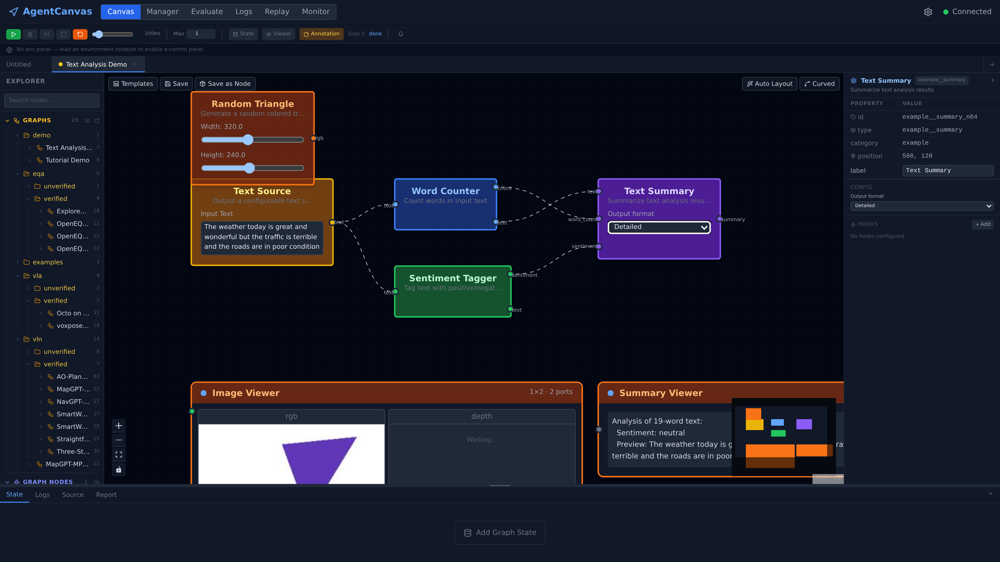
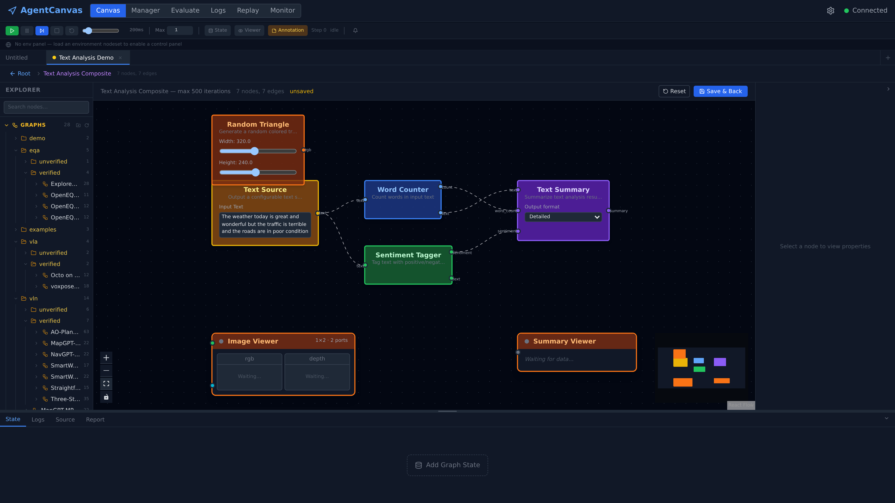
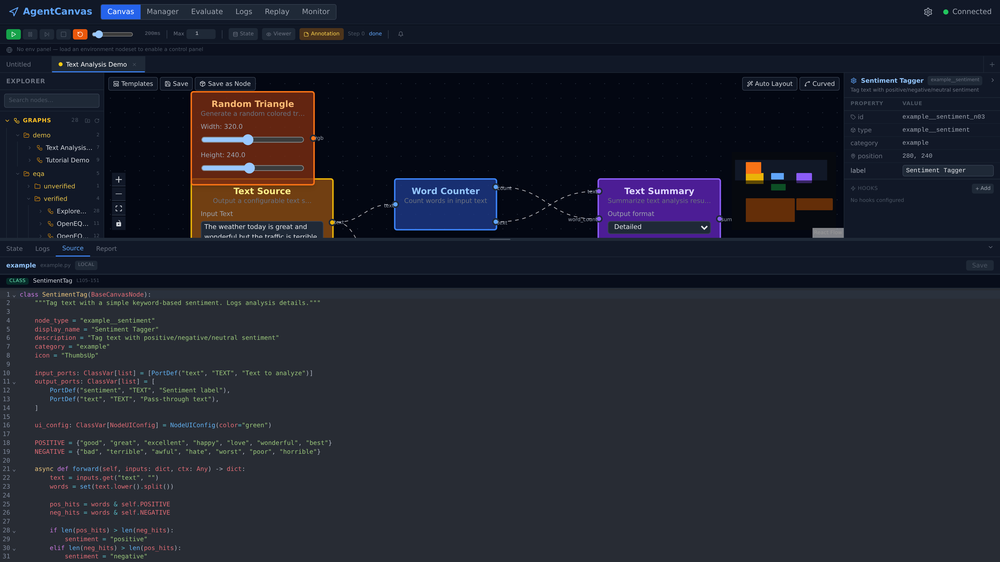

8Visual Canvas Editor
A React Flow editor where you wire up an agent graph, drop nodes from a live backend catalog, and watch every port update during execution — no separate "design" and "monitor" tools.
Every other capability page in this section describes a backend mechanism. This one is about the surface researchers actually touch: the in-browser canvas where graphs are authored, configured, run, and drilled into — one React app, one multiplexed WebSocket, no separate "design" and "monitor" tools. Load a graph from the explorer tree, drop nodes from the live catalog, wire them with type-checked connections, press Play, and watch every port light up — then open a node's Python source in the bottom drawer and hot-patch it without leaving the browser.
Design docs: Canvas System · Graph System · Execution Logs
1. Problem
An agent-graph authoring tool needs four things that don't combine easily:
- Edit topology — drag/drop nodes, draw typed wires, validate connections before submit.
- Configure nodes — every node ships its own settings (model name, temperature, image grid size); these can't be hand-coded panels per node type.
- Run and watch — show port-by-port output while the executor is running, not just a final summary.
- Drill in / out — open a composite, edit its inner graph, save back, without losing the outer canvas context.
If any of these is split across a separate page, the round-trip cost dominates. The unified editor folds all four into one ReactFlow canvas backed by a single WebSocket stream.
2. Three-Layer Architecture

- React Flow (
@xyflow/react) renders nodes and edges; it owns geometry (positions, viewport, drag state). - Zustand store (
useFlowStore) owns graph semantics (typed wires, port resolution, composite drill-stack, per-node live output). Tab-aware: each open tab is an independent slice with its own nodes/edges/nodeOutputs; top-level selectors are projections of the active tab so older components keep working. - WSManager (
ws.ts) is one singleton WebSocket with auto-reconnect (exponential backoff 1s → 30s), a typed handler map, and a wildcard channel. Every panel that needs live data subscribes by frametype— no per-feature socket.
State-changing actions (load nodeset, run graph, cancel run) are HTTP because they need a synchronous result. Live execution is WS because it's a high-volume one-way fan-out.
3. Graph Editor
UnifiedGraphEditor is the same component at the root canvas and inside a composite's inner graph:
| Mode | State source | Save semantics |
|---|---|---|
root | Reads/writes the active tab's useFlowStore slice directly | IDE-style Ctrl+S: if the tab is bound to a saved graph, PUT in place with no prompts; otherwise (new tab from a template) open the Save-As dialog |
subgraph | Local React state seeded from the composite's subgraph | Explicit Save & Back / Reset; onSave writes back to the parent composite node's data.subgraph |
Both modes share the drag-drop pipeline, typed-wire compatibility check (isCompatibleWireConnection), and the same proxiedNodeTypes registry, so a composite editor looks and behaves identically to the root — only the persistence model differs.
3.1 Typed Wire Compatibility
Connections go through useFlowStore.onConnect → isCompatibleWireConnection. The check pulls each port's wire_type from portResolution (which walks _schema + live config.ports overrides for instance-derived ports such as iterIn, stateContainer, imageViewer) and rejects mismatches before the edge enters the store. This means the canvas can never reach the backend in a state that would only be caught by validate_graph_connectivity.
3.2 Explorer: Graphs Tree and Node Catalog
The left rail is ExplorerPanel, a VS Code-style sidebar with two sections:
- Graphs — a folder tree over both on-disk roots served by
GET /api/graphs:workspace/graphs/(editable graph templates,kind="graph") andworkspace/graph_nodes/(archived composite nodes,kind="node"). Double-clicking a graph opens it in a new tab; an archived composite instead drags onto the canvas as a composite node carrying its subgraph. The tree supports create/rename/delete folders and drag-to-move — all backed by the graphs API. - Nodes — the drag-source catalog built by
unifiedCatalogfrom a single endpoint,GET /api/components/node-schemas. The backend walks every registered node class (built-ins and currently loaded nodeset nodes alike) and returns type, display name, category, icon, ports with wire types,config_schema,default_config, andui_config. The frontend splits entries into built-ins vs nodeset tools by the__in the type name — there is no bundled node table; the palette is the backend registry, re-fetched on every nodeset load/unload and profile change.
Because a dropped node's initial state is the schema's default_config plus the schema itself (_schema), a freshly dropped node validates and renders its ports immediately, before any backend round-trip.
3.3 Auto-Layout and Edge Routing
The Auto Layout button sends the current graph to POST /api/graphs/layout together with each node's real rendered size (React Flow's measured width/height) — so wide nodes don't overlap the next fixed-pitch column. The backend returns new positions plus per-edge orthogonal waypoints; a Curved / Orthogonal toggle switches between default bezier wires and RoutedEdge, which draws the orthogonal path through the reserved channels.
4. Configuration Panel
Selecting a node opens PropertiesPanel, which renders fields straight from the node's ui_config.config_fields (or, for non-customised nodes, infers them from configSchema). One renderer (ConfigFieldRenderer) covers the widgets:
text/textarea/select/slider/toggle/label— primitive fieldsport_list— used byiterIn/iterOut/stateContainer/imageViewerto add/remove typed ports; edits feed back intoportResolutionso the node's handle row updates live
LLM-backed nodes get an extra block from LlmModelControls. ModelRefPicker is one dropdown with three reference modes: Default (follow the active profile), a named profile, or Browse… (a provider → model cascade pinned inline on the node as {provider, model}). The panel then fetches GET /api/providers/{id}/capabilities for the resolved pair and imposes the parameter rulebook on the controls at edit time — locked parameters show the value and the reason, ranges clamp the slider, unsupported parameters gray out. The same rulebook is applied again at call time; the panel is just the "before" render of it.
There is no per-node React form. Adding a new node type means adding its ui_config and config_schema on the Python side; the UI is automatic.
5. Live Execution View
While the executor runs, the editor consumes four WS frame types from state.broadcast:
| Frame | Emitter | Frontend handler |
|---|---|---|
nav_status | GraphExecutor + LoopRunner | Updates the run-state banner (idle / running / paused / error) and toolbar |
nav_step | GraphExecutor._broadcast_step | Consolidated per-step payload from graphOut sinks — feeds the agent node's nodeOutputs entry (RGB / depth / action / position / containers / metrics) |
viewer_data | textViewer / textScroll / imageViewer | Per-node payload ({node_id, step, fields}) — routed by node_id straight into that node's nodeOutputs.fields slice |
error_event | ErrorBus (ADR-observability-004) | Pushed to errorStore + Report panel + per-node error badge on the canvas |
Each node's shell (NodeShell + HandleDot) renders a per-handle status dot driven by nodeOutputs[node_id]; receiving a value flips the handle to "filled", emitting flips the output handle to "fresh".
6. Composite Drill-Down
A composite node renders as a tile showing its name and inner node count, with two affordances: Preview expands an inline list of the inner node types, and Edit drills in. Drilling is not a modal — the canvas area swaps to the inner graph (UnifiedGraphEditor mode="subgraph", seeded from the composite's subgraph), and a breadcrumb bar appears above it: ← Root › {composite name}. Multi-level dives push frames onto the store's canvasStack; every crumb is clickable, so you can jump straight back to any depth. Edits live in local React state until Save & Back writes them into the parent composite node's data (Reset discards); the parent tab's nodes, positions, and selection are untouched in the store throughout.

← Root › Text Analysis Composite — 7 nodes, 7 edges) leads back out; Save & Back / Reset control whether the inner edits are written back to the parent node.7. Panels
The canvas is wrapped by a tab-aware shell: a tab bar for multiple open graphs, one resizable left rail, one resizable right rail, and one resizable bottom drawer. Every panel is a thin Zustand consumer:
| Panel | Where | Role |
|---|---|---|
TabBar | top | One tab per open graph, each an independent store slice; dirty dot until saved |
ExecutionToolbar | top | Run / pause / step / stop / restore-checkpoint · step-delay slider · step budget (Max) · State / Viewer / Annotation toggles |
EnvPanel | top | Env-panel methods exposed by loaded env nodesets (split / episode / reset) |
ExplorerPanel | left | Graphs folder tree + node catalog (§3.2) |
GraphStateBanner | above canvas | Graph-level state containers with live value previews; add/remove named states |
PropertiesPanel | right | Selected-node config form (auto-rendered from ui_config, §4) + per-node hook editor |
OutputDrawer | bottom | Four fixed tabs — State (live state-container values), Logs (per-node inner_log timeline, ADR-observability-003), Source (§8), Report (ErrorBus envelopes with an unread badge; clicking one jumps to the offending node) |
TemplatePicker | modal | Starter graphs from TEMPLATES (defaultGraph.ts) |
SaveGraphDialog | modal | Save the canvas as a named graph — or, via Save as Node, as an archived composite under workspace/graph_nodes/ that later drags onto any canvas (§6) |
Keyboard shortcuts follow IDE conventions — Ctrl+S saves in place (§3), ? opens the shortcut cheatsheet overlay.
8. Editing Node Source In Place
The bottom drawer's Source tab turns the canvas into a light IDE for nodeset code. Select a nodeset node and SourcePanel shows only that node's slice of its nodeset file — the module-level globals, the functions its class transitively references, and the class itself — one stacked CodeMirror editor per segment, each tagged with its kind and line range (CLASS SentimentTag · L105–151). Save splices the edited segments back into the file by line range; the backend syntax-checks the whole file before writing anything, and the nodeset watcher then hot-reloads the component — the save button walks "Saved" → "Reloaded ✓" as the components_changed broadcast comes back. Edit the forward() of a node, press Play again, and the new behaviour runs — no terminal round-trip.

example.py, LOCAL badge) is reduced to the one class that defines the node, ports and forward() included. Saving splices this segment back by line range, syntax-checks the full file, and hot-reloads the nodeset.9. Run Flow
Pressing Run in the toolbar fires runPipeline(graph):
- Convert the live ReactFlow nodes/edges back to a
GraphDefinitionviafromFlowNodes+fromFlowEdges. - Client-side pre-flight: for
eval_graph: true(default), require ≥1graphOutnode. Surfaces a clearer error than waiting for the backend'svalidate_graph_connectivity. - Build the
LoopDefinitionwire payload (nodes, edges, containers, access_grants, step_budget, terminationCondition, presetId, hooks). - POST to
/api/navigate/run(ADR-platform-002 — single endpoint) with an optionalexecution_idandstep_delay_ms. - The backend acknowledges with
{ execution_id }and starts emittingnav_status/nav_step/viewer_data/error_eventframes over the already-open WS — no new connection.
Cancel goes through POST /api/navigate/run/stop; the toolbar disables itself based on nav_status.status.
10. Related Pages and Tools
The visual editor is one of several React surfaces backed by the same store and WS:
- NodeSet Manager (
pages/NodeSetManager.tsx) — load/unload nodesets, pick local vs server mode, view manifest. Updates to loaded nodesets reflow the editor's catalog. - Eval page (
eval/EvalPage.tsx) — submit / monitor / cancel batch runs (see capability 7); reuses the same WSManager for per-episodenav_step. - Replay page (
replay/ReplayPage.tsx) — scrub through stored per-episode logs (ADR-eval-004); renders the same node shells with frozen data. - Log viewer (
logs/LogViewerPage.tsx) — historic execution logs with the canvas re-rendered from the saved graph; per-node inner_logs are filtered, paginated, and clickable.
11. Key Files
| File | Role |
|---|---|
agentcanvas/frontend/src/canvas/UnifiedGraphEditor.tsx | Root + subgraph editor; ReactFlow host, drag-drop, save/reset |
agentcanvas/frontend/src/canvas/useFlowStore.ts | Zustand store: tab-aware nodes/edges/nodeOutputs/canvasStack; integrates ReactFlow change handlers |
agentcanvas/frontend/src/canvas/unifiedCatalog.ts | Catalog merge: built-ins + loaded nodesets + composite graph_nodes |
agentcanvas/frontend/src/canvas/unifiedNodeTypes.ts | ReactFlow nodeTypes registry — wraps every node type with the shared shell |
agentcanvas/frontend/src/canvas/nodes/shared/NodeShell.tsx | Universal node frame: handle rows, status dots, error badge, composite-drill button |
agentcanvas/frontend/src/canvas/nodes/shared/HandleDot.tsx | Per-handle status dot driven by nodeOutputs |
agentcanvas/frontend/src/canvas/nodes/composite/CompositeNodeView.tsx | Composite tile + drill button → subgraph modal |
agentcanvas/frontend/src/canvas/panels/PropertiesPanel.tsx | Auto-rendered config form from ui_config.config_fields |
agentcanvas/frontend/src/canvas/panels/ExplorerPanel.tsx | Left rail: graphs folder tree (open-in-tab / drag composite) + node catalog |
agentcanvas/frontend/src/canvas/panels/OutputDrawer.tsx | Bottom drawer host — State / Logs / Source / Report tabs |
agentcanvas/frontend/src/canvas/panels/SourcePanel.tsx | Scoped per-node source editing with splice-back save + hot reload |
agentcanvas/frontend/src/canvas/panels/TabBar.tsx | Multi-graph tabs over per-tab store slices |
agentcanvas/frontend/src/canvas/panels/GraphStateBanner.tsx | Graph-level state bar above the canvas with live previews |
agentcanvas/frontend/src/canvas/panels/LlmModelControls.tsx | ModelRefPicker + capability-rulebook rendering for LLM nodes |
agentcanvas/frontend/src/canvas/panels/ExecutionToolbar.tsx | Run/pause/cancel/step-delay controls; observes nav_status |
agentcanvas/frontend/src/canvas/runPipeline.ts | Editor → LoopDefinition → POST /api/navigate/run |
agentcanvas/frontend/src/canvas/graphConversion.ts | GraphDefinition ↔ ReactFlow Node[]/Edge[] (incl. containers, access grants) |
agentcanvas/frontend/src/canvas/portResolution.ts | Resolve instance ports (iterIn / stateContainer / imageViewer) from live config |
agentcanvas/frontend/src/ws.ts | WSManager singleton — auto-reconnect, typed handler map, wildcard channel |
agentcanvas/frontend/src/store.ts | WS subscriptions: routes nav_step / viewer_data / nav_status / error_event into the appropriate store slices |
Status
| Item | Status | Notes |
|---|---|---|
| Unified root/subgraph editor | Done | UnifiedGraphEditor handles both modes with one component |
| Typed-wire client-side validation | Done | isCompatibleWireConnection in useFlowStore.onConnect |
| Auto-rendered properties panel | Done | ConfigFieldRenderer covers text / textarea / select / slider / checkbox / port_list / llmRef |
| Catalog = backend registry | Done | unifiedCatalog built from GET /api/components/node-schemas; re-fetched on nodeset load/unload |
| Explorer graphs folder tree | Done | Both kind roots; open-in-tab, drag-composite, folder CRUD |
| In-place node source editing | Done | Source tab: scoped segments, splice-back save, syntax check, hot reload |
| Auto-layout + orthogonal routing | Done | POST /api/graphs/layout with measured node sizes; Curved/Orthogonal toggle |
| Single multiplexed WebSocket | Done | One wsManager with typed channels + wildcard |
| Per-handle live status | Done | NodeShell + HandleDot driven by nodeOutputs |
| Consolidated nav_step from graphOut sinks | Done | Recognised port names (rgb/depth/action/state/done/metrics/response) fed into agent node slice |
| Per-node viewer_data routing | Done | Sink nodes emit their own viewer_data frames during forward() |
| Tab-aware canvas slices | Done | Each tab owns nodes/edges/nodeOutputs/canvasStack |
| Composite drill-down with save/reset | Done | Canvas swaps to the inner graph with a clickable breadcrumb trail (canvasStack); parent tab state preserved in the store |
| Pre-flight: eval_graph requires graphOut | Done | Caught client-side before /api/navigate/run round-trip |
| Step-delay slider for human-readable runs | Done | step_delay_ms passed on every /api/navigate/run call |
| Restore-checkpoint UI | Done | Toolbar reads get_checkpoints(); per-scope (ADR-executor-003) |
| Error-bus badges on offending node | Done | Report panel click jumps to node on canvas |
| Mobile / touch UX | Planned | ReactFlow supports it but no UI tuning done; right panels do not collapse on narrow viewports |
| Multi-selection composite extraction | Planned | "Select N nodes → wrap into composite" — group-selection scaffolding exists in groupSelection.ts; UI command not wired |
| Legacy panels in the tree | Stale code | NodeLibrary, ObservationPanel, StepLogPanel are no longer mounted anywhere — superseded by ExplorerPanel and the drawer tabs; candidates for deletion |